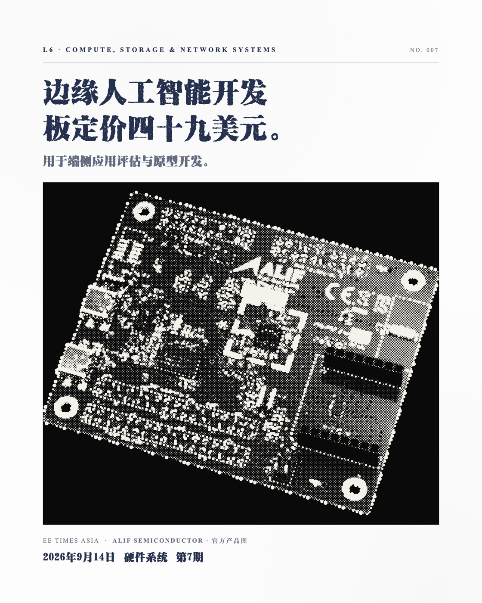

AI辅助内容生产 / 2026
从资料到图文
AI Content Workflow / 洋务运动员
将新闻研究、AI辅助草拟、选图与版式制作连接成个人工作流，由人工完成编辑判断和最终发布。
- 我的角色
- 内容研究、视觉制作与流程实践
- 项目产出
- 图文成品与可复用制作流程
- 当前状态
- 个人使用中，持续迭代

01 / APPROACH把重复步骤连起来
从新闻到图文，需要搜集材料、整理事实、修改文案和调整版式。我用AI辅助这些步骤，同时保留来源、编辑判断和局部修改的空间。
让内容可以复核、流程可以重复使用，并在制作中继续调整。
02 / WORKFLOW从资料到图文
研究与选题
搜集新闻与来源材料，整理事实和背景，由人工决定值得继续制作的主题。
草拟与校订
使用LLM辅助梳理结构与草稿，再核查事实、论点与表达，保留人工修改。
选图与版式
选择配图、安排信息层级并制作图集。文字和视觉分步处理，便于局部修订。
审核与发布
核对文案、图片和来源，按平台整理输出与归档，由人工完成最终发布。
03 / OUTPUT真实成品与边界
“东亚制造”是这套流程的一项图文实践。第007期将新闻材料整理为可编辑、可归档的图文成品；原图集以2160 × 2700 PNG输出。
本页展示的是我的内容与版式制作。封面中的产品照片来自资料来源，并非本人摄影或AI生成，原有来源标注已保留。
已形成个人使用的生产流程、图文与归档记录，后续围绕稳定性和平台适配迭代。
查看东亚制造项目 ↗